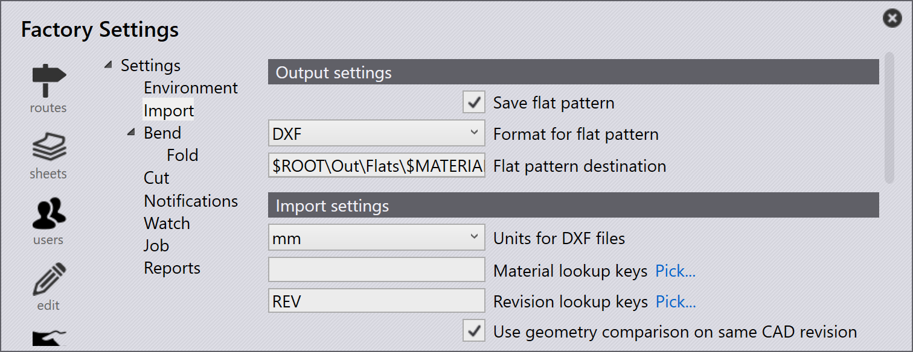

Εισαγωγή parts
Πριν από την εισαγωγή parts, βεβαιωθείτε ότι οι μορφές αρχείων είναι συμβατές με το TruSmartCAM. Δείτε τις υποστηριζόμενες μορφές αρχείων για περισσότερες λεπτομέρειες.
| Εάν το υλικό και το πάχος δεν έχουν αντιστοιχιστεί στο part μετά την εισαγωγή, εκχωρήστε υλικό χρησιμοποιώντας τον πίνακα part. |
Μέθοδοι εισαγωγής
Υπάρχουν τρεις μέθοδοι για την εισαγωγή parts στη Βιβλιοθήκη Part:
-
Εισαγωγή μέσω αρχείου
-
Μεταφορά και απόθεση
-
Φάκελος παρακολούθησης
Εισαγωγή μέσω αρχείου
Ένα αρχείο part 2D ή 3D μπορεί να εισαχθεί στη Βιβλιοθήκη Part χρησιμοποιώντας την επιλογή Εισαγωγή εξαρτημάτων.
-
Κάντε κλικ στα εικονίδια άνοιγμα από τη γραμμή εντολών και επιλέξτε την επιλογή Εισαγωγή εξαρτημάτων.

-
Εμφανίζεται ο διάλογος Open — επιλέξτε οποιοδήποτε αρχείο CAD (2D ή 3D).
-
Εμφανίζεται μια προεπισκόπηση του επιλεγμένου αρχείου CAD.

-
Επιλέξτε το απαιτούμενο part και κάντε κλικ στο Open.
-
Το σύστημα εφοδιάζει αυτόματα με εργαλεία το part για όλες τις διαθέσιμες μηχανές με ενημερωμένη κατάσταση tooling .
Μεταφορά και απόθεση
-
Μεταφέρετε και αποθέστε ένα αρχείο part απευθείας στη Βιβλιοθήκη Part του TruSmartCAM.
Φάκελος παρακολούθησης
Οι ρυθμίσεις παρακολούθησης σας επιτρέπουν να παρακολουθείτε έναν φάκελο για νέα αρχεία και να τα εισάγετε αυτόματα στη Βιβλιοθήκη Part.
Για διαμόρφωση, δείτε τη σελίδα Watch settings.
|

Διαμόρφωση εισαγωγής
Χρήση σύγκρισης γεωμετρίας στην ίδια αναθεώρηση CAD
Κατά την εισαγωγή ενός part με την ίδια αναθεώρηση CAD, το TruSmartCAM μπορεί να συγκρίνει τη γεωμετρία του αρχείου CAD με το υπάρχον part.
-
Για να το ενεργοποιήσετε αυτό, διαμορφώστε Πλήκτρα αναζήτησης αναθεωρήσεων (για παράδειγμα, REV) στο εργοστασιακές → ρυθμίσεις →Εισαγωγή/Εξαγωγή. Στη συνέχεια, ενεργοποιήστε την επιλογή Χρήση σύγκρισης γεωμετρίας στην ίδια αναθεώρηση CAD.

| Η σύγκριση γεωμετρίας στην ίδια αναθεώρηση CAD λειτουργεί μόνο όταν τα Πλήκτρα αναζήτησης αναθεωρήσεων είναι διαμορφωμένα. |
-
Τώρα, εισαγάγετε ένα part στη βιβλιοθήκη part με συγκεκριμένη αναθεώρηση (για παράδειγμα, Revision 1).

-
Το ίδιο part εισάγεται ξανά με την ίδια τιμή αναθεώρησης.
-
Το TruSmartCAM συγκρίνει τη γεωμετρία του νέου εισαγόμενου αρχείου CAD με το υπάρχον part.
-
Εάν ανιχνευθεί διαφορά γεωμετρίας, το TruSmartCAM εμφανίζει μια προτροπή ρωτώντας αν θα:
-
Αντικατάσταση το υπάρχον part με τη νέα γεωμετρία, διατηρώντας την ίδια αναθεώρηση τιμή.
-
Παράλειψη την εισαγωγή, διατηρώντας το υπάρχον part και τη γεωμετρία του.

-
Αυτό επιτρέπει στους χρήστες να ενημερώσουν τη γεωμετρία part χωρίς να αλλάξουν την τιμή αναθεώρησης, ενώ διατηρούν τον έλεγχο σχετικά με το αν αντικαθίστανται τα υπάρχοντα parts.
Τα εισαγόμενα parts προστίθενται αυτόματα στη βιβλιοθήκη για περαιτέρω χρήση. Για περισσότερες πληροφορίες, δείτε Library.